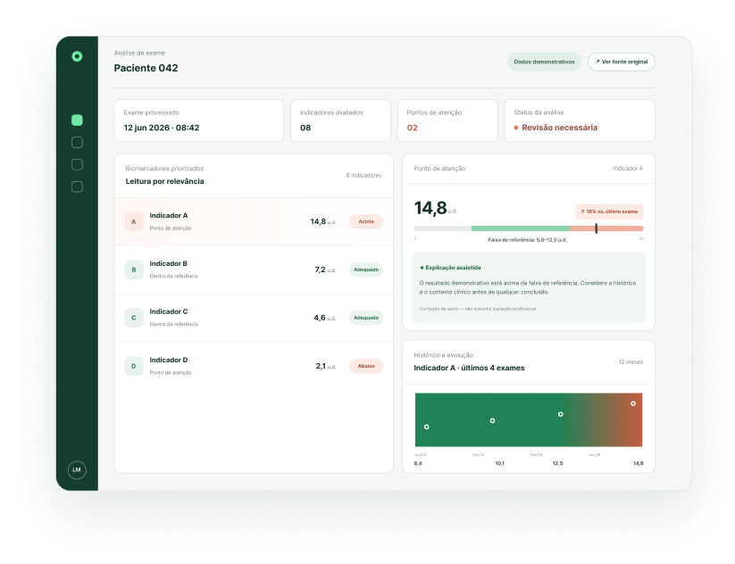
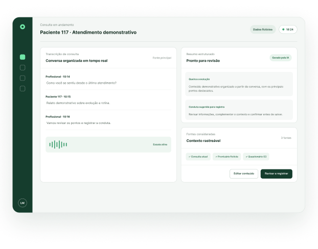
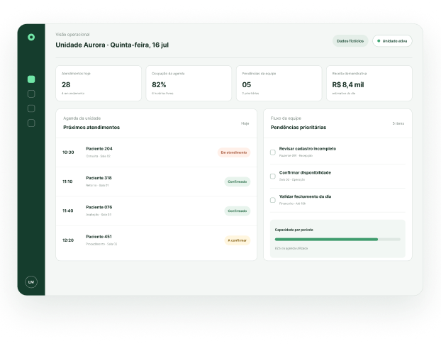
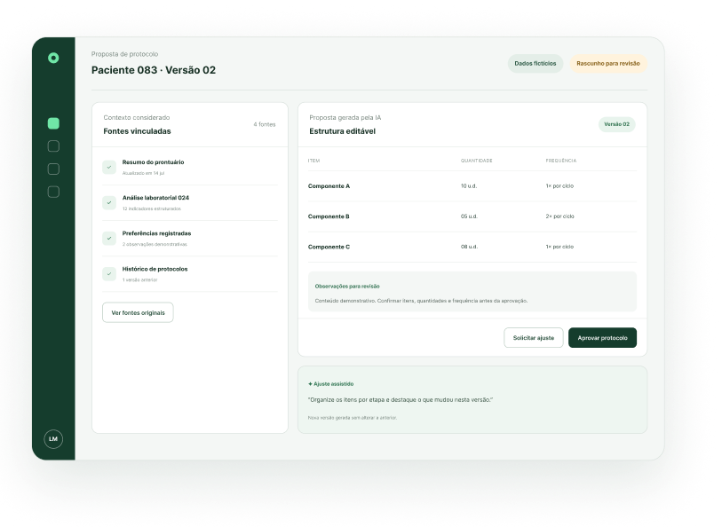

Figma
Interfaces e protótipos

Product Owner com experiência em UX/UI Design.
Apaixonado por entender problemas, estruturar soluções e transformar complexidade em produto.
Como Product Owner com experiência em UX/UI Design, conecto negócio, usuário e tecnologia para transformar problemas complexos em produtos digitais claros, úteis e viáveis para o desenvolvimento.
Trabalhos selecionados
Uma seleção de produtos em Healthcare, SaaS e inteligência artificial, apresentados a partir das decisões e dos problemas que orientaram minha atuação.
IA para acelerar a interpretação de exames laboratoriais e acompanhar a evolução clínica do paciente.
Estruturei a jornada, os fluxos e os requisitos do MVP para tornar a análise de biomarcadores mais rápida e organizada.


Assistente que transforma a conversa clínica em registros estruturados, documentos e protocolos.
Conectei necessidades clínicas, experiência do usuário e regras do produto em uma solução preparada para o desenvolvimento.

Evolução contínua de uma plataforma para gestão de clínicas utilizada por diferentes perfis de usuários.
Transformei feedback de clientes e necessidades de negócio em prioridades, fluxos e entregas incrementais.

Solução independente que combinava prontuário e análises laboratoriais para gerar propostas editáveis de protocolos.
Estruturei o fluxo de contexto, geração, ajustes e aprovação, que posteriormente foi integrado ao Copiloto de Prontuário.
Ferramentas que conectam discovery, documentação, backlog, prototipação e IA aplicada.
Interfaces e protótipos
Documentação de produto
Backlog e PBIs
Prompts e análise
Agentes e artefatos
Conhecimento e Markdown